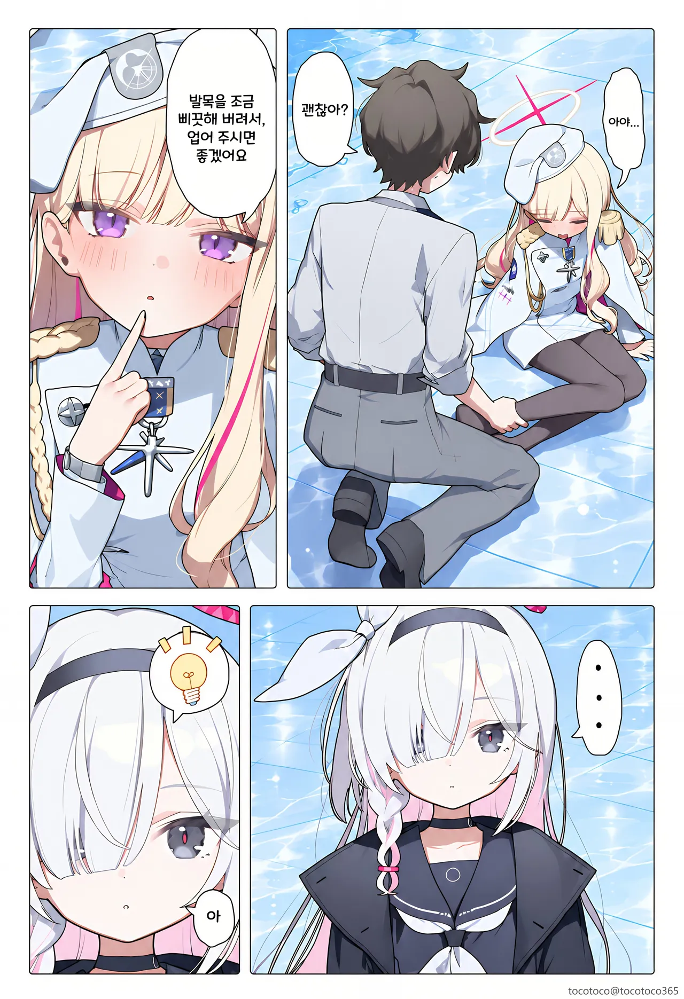
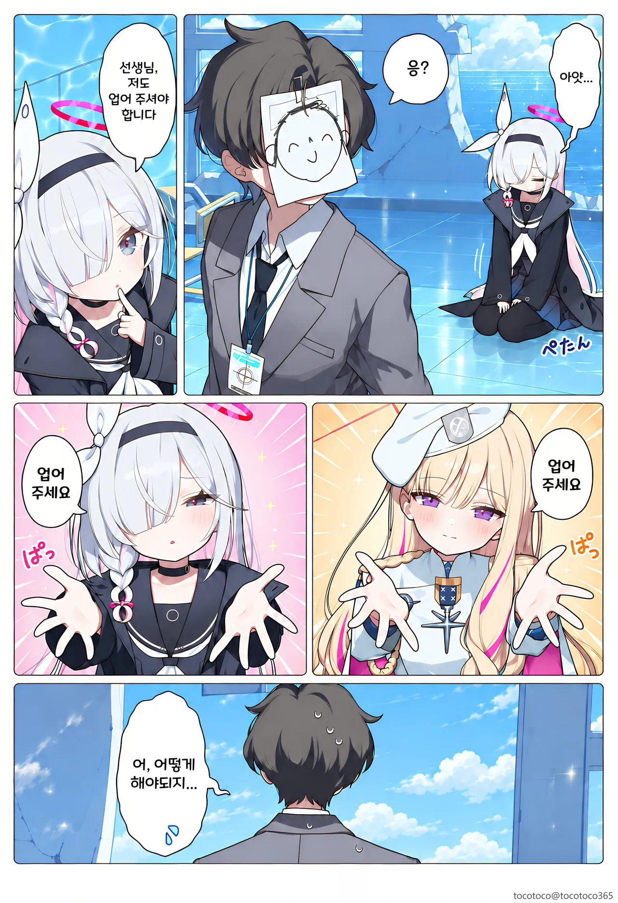

아로나에게 꿀밤을 먹인다
아노 온나
프라나 아껴줘야지
둘 다 발목 잡고 질질 끄는 선택지 ㅇㄷ
바닥 깨끗하네
둘을 합성한다
기가선생 : 한 명은 오른쪽 어깨, 한 명은 왼쪽 어깨에 얹는다
기술 가정 선생인줄
프리나는 분홍봉투 주잖아
앞 뒤로 업어준다 그리고 한번 더 일어나는 신경전
허리춤에 끼고가라
어렵다 하
칼학은 업어주고 프라나는 안아줘야지
발목주작은 뭐야
이 때를 위해 운동했다
팔 하나당 한명씩 앉혀
이러라고 쓰리썸이란게 있는거다
하나는 앞에 끼우고 하나는 들쳐 업어
머리에 저거 단 애들 탱크 부수고 그러고 다니는 애들 아니었나
인장주작은뭐야는 혼자서 걸어!
팔이 2개인데 왜 한꺼번에 못하지?
검은옷 이쁘네 열차가키 시스터즈보단 못하지만
발목 주작은 ㅆㅂㄴ!